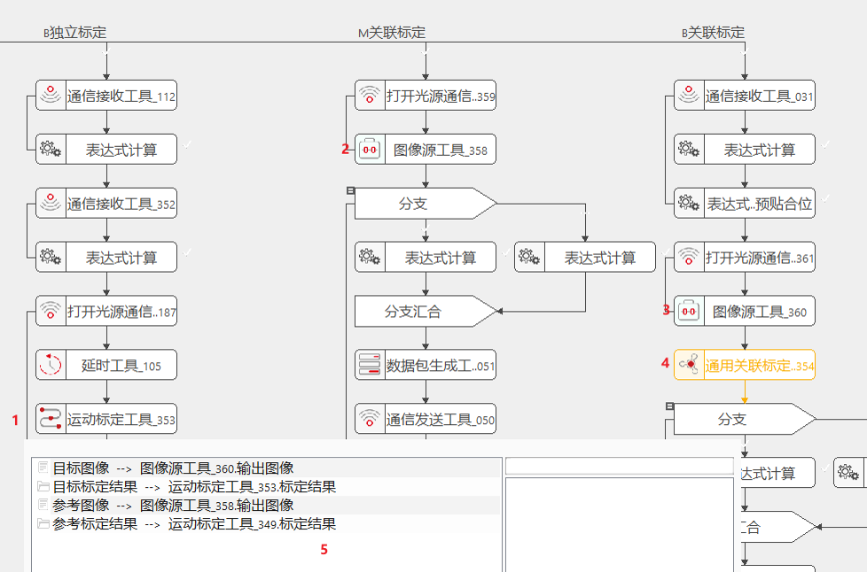
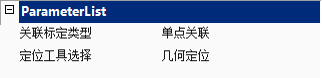
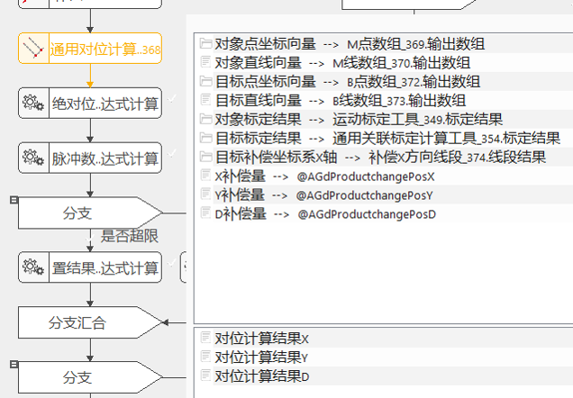
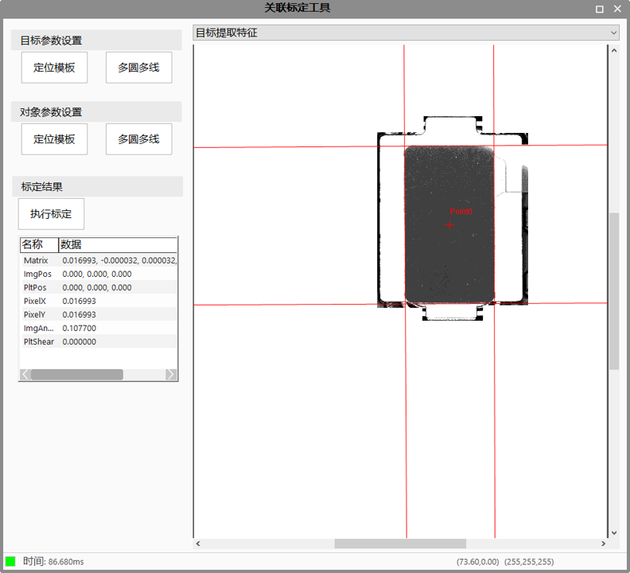

本工具用于关联标定计算。在关联标定过程中，首先已知参考对象相机的标定结果，而后通过在参考相机与目标相机下进行关联标定运动，得到相应定位点的参考图像坐标（向量）与待标定相机下定位点的图像坐标（向量），而后通过本工具用于关联标定计算。
由“运动标定工具”说明文档可知，当完成相机的独立标定（平移 + 旋转）后，可以得到此相机坐标系和机械坐标系的转换关系（平移 + 旋转 + 缩放），其中平移标定能够计算出两个坐标系的旋转 + 缩放关系，旋转标定能够计算出两个坐标系之间的平移关系（即两个坐标系原点之间的距离，同理，也可用图像中某一点对应的平台坐标来标识出这种关系）。在实际的应用场景中，有些相机往往无法独立的完成平移 + 旋转标定，所以需要借助已经完成独立标定的相机来计算未知相机和机械坐标系的平移关系。
如功能概述，以两个CCD为例，假设CCD1完成了独立标定，CCD2完成了平移标定，且实际应用中CCD1和CCD2采集的图像分别作为目标和对象进行对位计算，此时需要利用此工具进行CCD1和CCD2的关联标定，以计算出CCD2和机械坐标系之间的完整关系。
当末端执行机构完成目标的抓取后，认为目标和末端执行机构的相对位置不会随着机构的运动而发生变化，基于此前提，仍然以应用场景中所述的两个CCD进行原理说明。如功能所述中的说明，两个坐标系之间的平移关系，可以用两个坐标系中对应的两个点的坐标值来进行标识，因此CCD2的标定结果中缺少一组图像坐标和与之对应的机械坐标。由于CCD1已经完成独立标定，所以可以计算出图像中任意一点所对应的机械坐标值，由末端执行机构抓取目标在CCD1下进行Mark定位，并计算出其机械坐标值，然后末端执行结构带动目标移动到预设的贴合位置，将目标放下，假设此过程物料和末端执行结构没有发生过相对移动，则此时Mark点对应的机械坐标值依然为CCD1下所计算的值；然后由CCD2采集并定位相同Mark的图像坐标值，并将此坐标值和CCD1下计算的机械坐标同时更新到CCD2的平移标定结果中，完成CCD2的完整标定结果。


关联标定类型
本工具支持“多点关联”和“单点关联”两种类型，当使用多点关联时，需要目标和对像中的Mark点数量不小于3，当使用单点关联标定时，目标和对象中的Mark点数量为1.。
Mark定位模式
Mark定位模式分为手动模式、DM码模式和标准靶标模式。当选择手动模式时，需要用户选择合适的定位工具，并进入工具的高级属性界面配置找圆找线工具，从而人为保证目标和对象中的Mark点数量和顺序符合要求；当用户选择DM码模式或标准靶标模式时，不需要人为干预做模板，工具内部会定位目标和对象中均存在Mark点，并进行关联标定计算。
定位工具选择
本参数仅在选择手动定位Mark时才会显示，包括几何定位和区域定位，并根据用户的加密狗的权限，增加或减少高级几何定位和高级区域定位。
如图所示为通用关联标定工具的属性界面，当用户进入属性界面后，需要点击“定位模板”按钮，则工具会根据用户选择的定位工具类型弹出相应的定位工具属性窗口，供用户设置模板。用户可以根据标定时目标和对象的特征进行模板设置。 多圆多线则为用户提供高精度的特征定位，用户在完成对象和目标的模板设置后，需要进一步配置其多圆多线特征，最终标定过程会根据用户配置的多圆多线输出的点集做结果计算。 其中“定位模板”对应于VA中的定位工具，如几何定位、区域定位等，而“多圆多线”则对应于VA中的多圆多线查找工具，这些工具的操作流程，参照相应的工具说明文档即可。 当用户切换图像下拉列表的“目标提取特征”和“对象提取特征”时，可以查看标定过程中目标和对象的特征定位结果。

| 现象描述 | 解决方法 |
|---|---|
| 标定结果异常 | 进入属性界面，查看目标提取特征和目标提取特征是否正确，如果定位或找圆找线结果异常，可以对相应的参数进行调整，在属性界面点击“执行标定”按钮，并查看重新定位后的标定结果是否正确 |
| 标定结果异常 | 进入属性界面，查看目标和对象的Mark点顺序是否一致，即要求目标和对象的Mark点一一对应，如果有问题，则调整找圆找线的顺序 |
| 标定结果异常 | 当用户选择DM码模式或者标准靶标模式进行关联标定时，标定结果的正确性依赖于DM码读取的准确性，当DM码读码结果出现错误时，会导致标定结果错误，此时用户可以修改DM码的读码参数，并重新进行标定 |
| 工具执行时间较长 | 当使用靶标进行标定时，工具内部会搜索目标和对象图像中所有的DM码，以定位两幅图像中共有的特征，所以此时工具执行时间较长属于合理现象。 |

| 参数名称 | 参数说 |
|---|---|
| 目标图像 | 链接待标定的图像 |
| 目标标定结果 | 链接待完善的标定结果（一般是完成平移标定），仅在“单点关联”模式下启用 |
| 参考图像 | 链接参考的图像 |
| 参考标定结果 | 链接参考的标定结果（一般是由完成独立标定的相机作为此参数的来源） |
| 参数名称 | 参数说 |
|---|---|
| 关联标定类型 | 支持进行单点和多点两种关联标定 |
| Mark定位模式 | 选择Mark的定位类型，支持手动、DM码、靶标3中模式 |
| 定位工具选择 | 选择定位工具，支持几何定位、区域定位、高级几何定位、高级区域定位4中类型，其中后两种是否支持要看加密狗的权限 |
| 参数名称 | 参数说 |
|---|---|
| 目标图像 | 显示链接的目标图像的相关参数（大小、类型等） |
| 参考图像 | 显示链接的参考图像的相关参数（大小、类型等） |
| 标定结果 | 待标定相机的完整标定结果 |
| 参考图像Mark点 | 参考图像的Mark定位结果，需要在属性界面查看 |
| 目标图像Mark点 | 目标图像的Mark定位结果，可以在工具的Result框和属性界面查看 |
| 参考图像找线结果 | 参考图像的直线定位结果，需要在属性界面查看 |
| 目标图像找线结果 | 目标图像的直线定位结果，可以在工具的Result框和属性界面查看 |
| 参考图像找圆结果 | 参考图像的找圆定位结果，需要在属性界面查看 |
| 目标图像找圆结果 | 目标图像的找圆定位结果，可以在工具的Result框和属性界面查看 |
| RMS | 标定结果的RMS误差 |
| 执行结果 | 工具的执行结果 |
| 执行时间 | 工具的执行时间 |
| 参数名称 | 参数说 |
|---|---|
| 标定结果 | 待标定相机的完整标定结果，同监视窗口。 |
参见“\Samples\应用案例\对位类项目\Mesh贴Box项目\Mesh贴Box工程.gvp” 及其说明文档“应用案例\对位类项目\Mesh贴Box项目”。